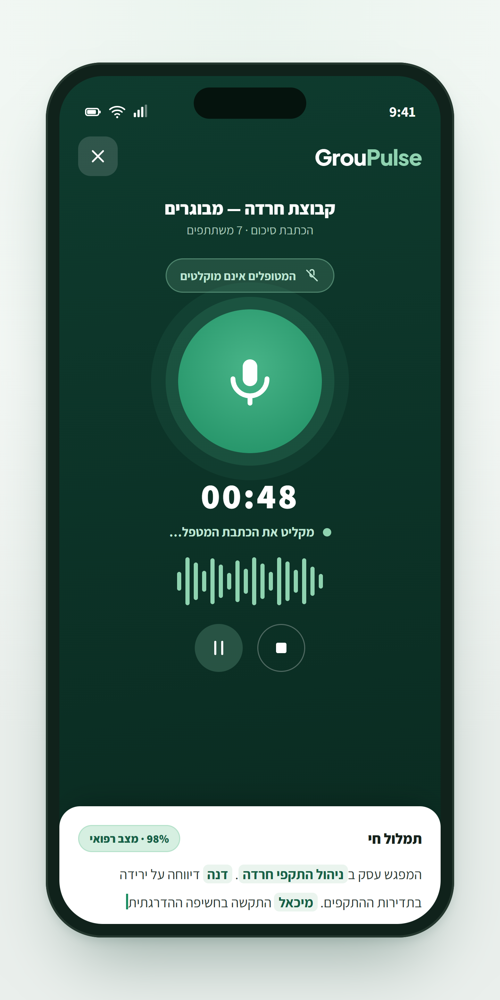
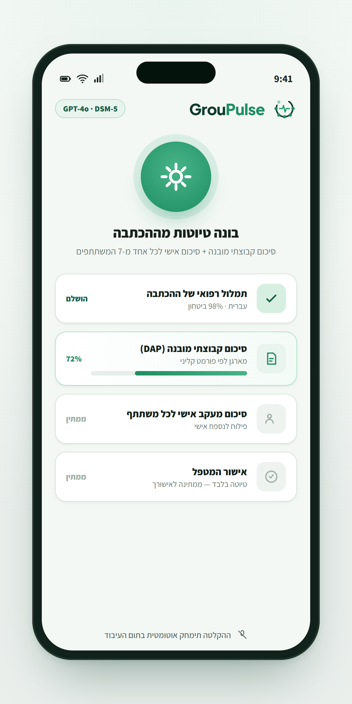
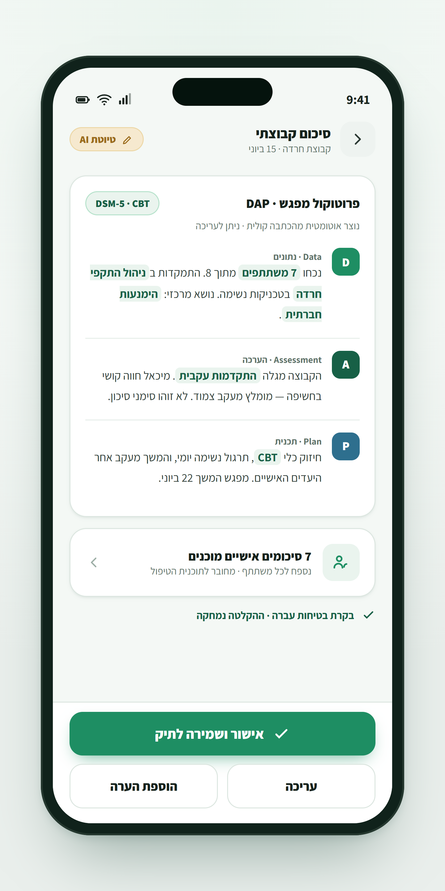
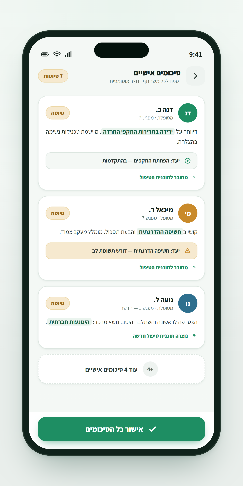
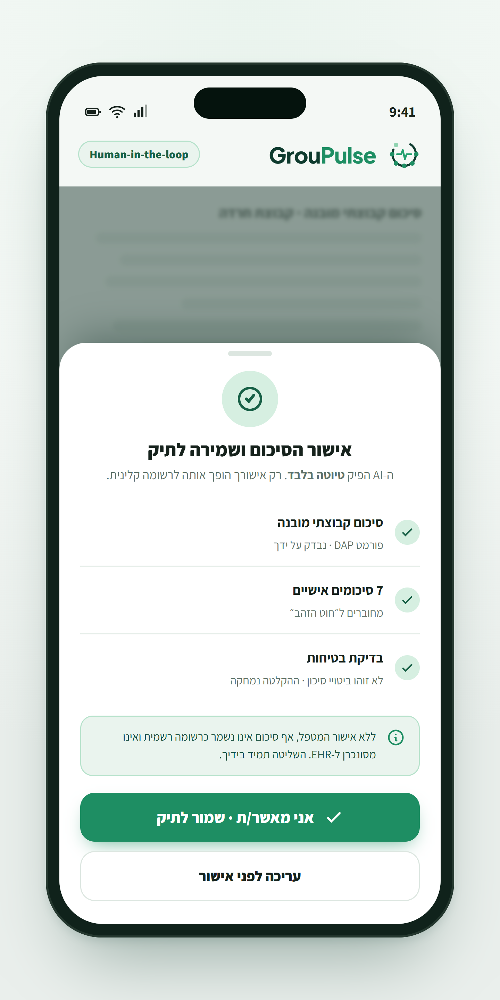

GrouPulse — הבית המקצועי למנחי קבוצות טיפוליות
אחרי כל מפגש קבוצתי צריך לתעד גם את מה שקרה בקבוצה, גם את התהליך של כל משתתף, וגם את הדינמיקה שנוצרה ביניהם. בפועל, התיעוד נדחה, מתקצר, נשאר טכני — או פשוט הולך לאיבוד. GrouPulse נבנית כדי לעזור למנחים להפוך תיאור קצר אחרי מפגש לטיוטת תיעוד מקצועית.
ממפגש שהסתיים, דרך תיאור קצר אחד, ועד טיוטת תיעוד מסודרת — קבוצתית ואישית.
סרטון הסבר קצר — כך GrouPulse עוזרת לעשות סדר בתיעוד הקבוצתי.
בתיעוד אישי יש מטופל אחד, תהליך אחד, מוקד אחד. בתיעוד קבוצתי יש כמה משתתפים, כמה תהליכים במקביל, ודינמיקה קבוצתית שמשפיעה על כולם.
בפועל, התיעוד נעשה לא פעם אחרי יום עמוס, בין פגישות או בלילה — כשהפרטים כבר מתחילים להתערבב. כך ידע מקצועי חשוב נשאר בראש של המנחה, במקום להפוך לתיעוד שמסייע למעקב, להדרכה ולהכנה למפגש הבא.
הרבה מנחים מתעדים פחות ממה שהם באמת יודעים — לא כי אין מה לומר, אלא כי אין זמן וקשה להתחיל.
במקום לשבת מול מסמך ריק, המנחה מכתיב או כותב בכמה דקות תיאור חופשי של מה שקרה במפגש. המערכת מסייעת להפוך אותו לתיעוד מסודר:
המטרה אינה להחליף את שיקול הדעת של המנחה — אלא לעזור לו להפוך את מה שכבר ראה, הרגיש והבין לתיעוד מקצועי שאפשר להשתמש בו.
רוב מערכות התיעוד נבנו סביב טיפול פרטני, אדמיניסטרציה או ניהול תיק. קבוצה טיפולית דורשת תיעוד מסוג אחר.
אלא מה התרחש בין המשתתפים — האינטראקציות והדינמיקה שנוצרה בקבוצה.
אלא מי התקדם, מי נמנע, מי השפיע על האקלים הקבוצתי, ואיזו תנועה נוצרה בקבוצה.
אלא תיעוד שמשרת את החשיבה המקצועית של המנחה — לא רק את הארכיון.
שלושה צעדים: מתארים את המפגש, המערכת מארגנת את החומר, והמנחה עורך ומאשר.

בקול או בכתב — תיאור חופשי וקצר של המפגש

הפיכת התיאור הגולמי לתיעוד מובנה

תמונת המפגש כולה ודינמיקות מרכזיות

התייחסות לכל משתתף ונקודות למעקב

המנחה עורך לפי שיקול דעתו ומאשר
הפיילוט הראשוני מיועד למנחים שמרגישים שהתיעוד הקבוצתי גוזל זמן, נשאר חלקי, או לא באמת משקף את מורכבות המפגש.
מנחים שמעבירים קבוצות טיפוליות באופן קבוע.
מטפלים רגשיים שעובדים גם בפורמט קבוצתי.
אנשי חינוך וטיפול שמובילים קבוצות בבית הספר.
מנחים במסגרות חינוכיות וטיפוליות מגוונות.
מדריכים בהכשרות טיפוליות שצריכים תיעוד ברור.
ארגונים שנדרשים לתיעוד, מעקב והדרכה סביב קבוצות.
משתתפי הפיילוט יוזמנו לשיחת היכרות קצרה, שבה נבין יחד את אופן העבודה שלכם:
בהמשך, מנחים מתאימים יוכלו להתנסות בגרסה ראשונית של GrouPulse ולהשפיע ישירות על הפיתוח.
GrouPulse נמצאת בשלבי פיתוח ראשוניים — ואנחנו רוצים לבנות אותה איתכם.
השאירו פרטים ונחזור אליכם לשיחת היכרות קצרה. המטרה היא לבנות כלי שמתאים לעבודה האמיתית של מנחי קבוצות — לא עוד מערכת כללית שצריך להתאים אליה את העבודה.
נחזור אליכם בקרוב לשיחת היכרות קצרה על התיעוד הקבוצתי שלכם.